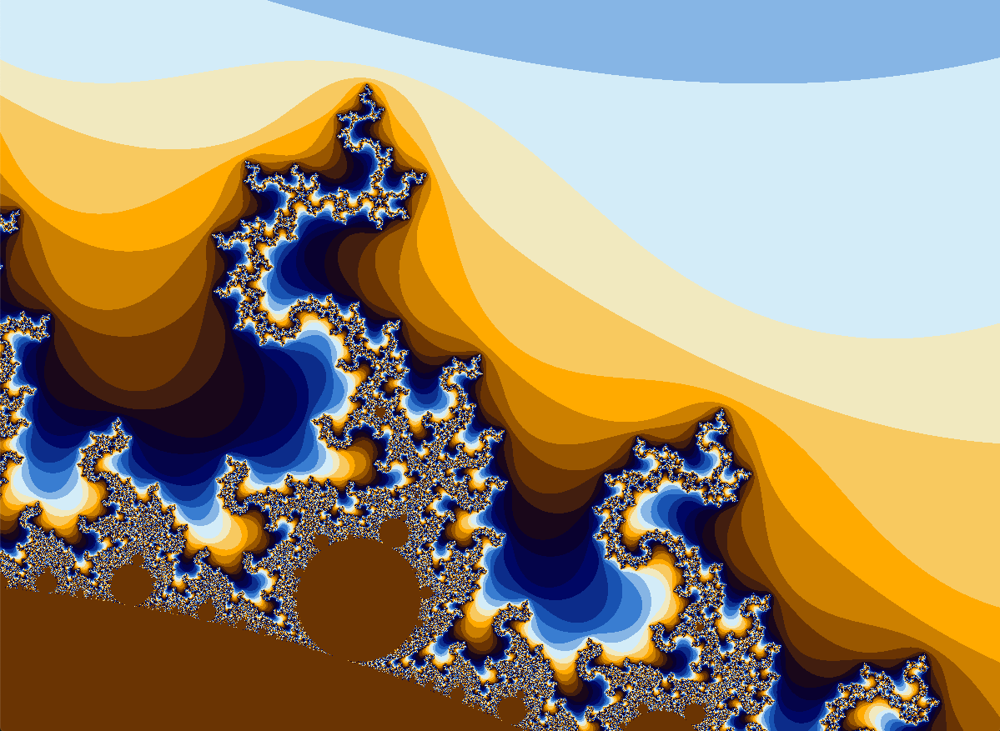

Project: Mandelbrot set visualizer
About the Mandelbrot set
Like the Sierpinski triangle from assignment 4, the Mandelbrot set is a fractal shape. It was discovered by the mathematician Benoit Mandelbrot, building on related sets called Julia sets. By "fractal", we mean that the shape is self-similar, so that magnifications of parts of the image of the shape resemble the full shape (though it isn't identical). We will be able to see this for ourselves once our visualizer is complete.
The Mandelbrot set is a set, specifically a collection of points in a two-dimensional space. The two dimensional space is actually the complex plane, which is a way of representing the infinite set of complex numbers.
Complex numbers
If you haven't studied complex numbers yet, don't worry! You don't need to understand them to do this assignment. If you're curious, though, a complex number is a combination of a real number with another real number multiplied by the square root of -1 (which is usually called \(i\), which stands for "imaginary"). Since -1 has no real square root, the complex numbers are a superset of the real numbers. We write a general complex number as \(x + yi\), where \(x\) and \(y\) are real numbers; \(x\) is the "real part" and \(y\) is the "imaginary part" of the complex number. (A real number is thus a complex number with an imaginary part of zero.) We can also represent complex numbers as a point in a two-dimensional space, where \(x\) and \(y\) are the familiar Cartesian coordinates.
Complex numbers are added and subtracted by adding/subtracting their real and imaginary parts separately. Complex numbers are multiplied using the normal laws of algebra with the simplification that \(i^2\) is -1. The magnitude of a complex number with real part \(x\) and imaginary part \(y\) is \(\sqrt{x^2 + y^2}\).
Complex numbers give rise to a huge variety of interesting mathematical applications, and you will undoubtedly encounter them again.
To compute the Mandelbrot set, we need to have a way of determining for any complex number \(c = x + iy\) whether the number \(c\) is in the set. We do this by computing the equation \(z_{n+1} = z_n^2 + c\) (where the \(z_{n}\)s are also complex numbers). Starting from \(z_0 = 0\), we iterate the equation repeatedly (computing \(z_0\), \(z_1\), \(z_2\), ...) and ask if its magnitude remains bounded or goes to infinity. If its magnitude remains bounded, the number \(c\) is in the set; if its magnitude goes to infinity, it isn't in the set.
For instance:
-
If \(c = 1\), the sequence of \(z\) values is \(0, 1, 2, 5, 26...\) and it keeps on growing, so the magnitude goes to infinity. Therefore, the number \(1\) is not in the Mandelbrot set.
-
If \(c = -1\), the sequence of \(z\) values is \(0, -1, 0, -1, ...\), from which we can see that the magnitude never goes beyond \(1\). Therefore, \(-1\) is in the Mandelbrot set.
Actually, the Mandelbrot set itself isn't that interesting to look at; if we made it into an image, it would just be a black-and-white image with e.g. black dots for all points that are in the set. To make the images more interesting, we will color-code each point based on how quickly each point goes to infinity (if it does). There are different ways to do this; a good description is given in this page. The basic idea is this:
-
We set a maximum number of iterations that we compute per point (to prevent the computation from going on forever).
-
For each point, we continue iterating until the point reaches an escape threshold, which is a point whose magnitude is sufficiently large that it's clear that the magnitude will eventually go to infinity if the iteration is continued forever.
-
Each point will be associated with the number of iterations until it reached the escape threshold, or the maximum number of iterations (if it never does).
Therefore, the Mandelbrot set computation consists in taking a bunch of points in the complex plane, and computing the iteration count for all of the points. Each iteration count can be associated with a specific color based on a color map. We take a grid of closely-spaced points in the complex plane, compute their iteration counts, convert each count to a color, and generate an image.
Some images
Here are some images of sections of the Mandelbrot set. All images are in a window 1200 pixels wide by 900 pixels high using an iteration count of 1024.
Note
For an incredible (and incredibly long!) video of the Mandelbrot set, zooming in continuously, see here.
Image 1
This represents the entire set. The central brown area contains the points that are in the set.
Parameters:
xmin: -2.5ymin: -1.5xmax: 1.5ymax: 1.5

Image 2
This is a good example of the complexity of the images you can find as you zoom in to interesting parts of the set.
Parameters:
xmin: -0.749ymin: 0.135xmax: -0.747ymax: 0.136
Image 3
Parameters:
xmin: -0.977ymin: -0.343xmax: -0.817ymax: -0.223

Image 4
This image is zoomed in quite far to one end of the original image. Here you can see a distorted replica of the Mandelbrot set at the center of the image, showing that the set is indeed fractal (self-similar).
Parameters:
xmin: -1.853ymin: -0.08xmax: -1.65ymax: 0.072

Note
If you enter these exact parameters into your program, don't be surprised if they don't look exactly the same. Fractal generation programs are exquisitely sensitive to things like roundoff error and slight differences in floating-point computations.
Compiling and running
Put all the code into a directory called mandelbrot
(which is the name of the package).
Then, from the directory above mandelbrot, do this to compile the files:
To run the program, do this:
where <args> are the required command-line arguments. They are:
width-- the width of the display window in pixels (must be > 0)height-- the height of the display window in pixels (must be > 0)xmin-- the minimum x-axis value being displayedymin-- the minimum y-axis value being displayedxmax-- the maximum x-axis value being displayed
From these, ymax
(the maximum y-axis value being displayed)
will be computed to match the window aspect ratio
(which is the width divided by the height).
Note
If arbitrary ymax values are allowed,
the Mandelbrot set can look stretched in one dimension,
so we force it to match the aspect ratio to avoid this.
A good test invocation of the program will be:
which will display the entire Mandelbrot set.
(This is image 1 above.
Note that the last coordinate (ymax) is not needed
and shouldn't be supplied,
since it's computed to match the aspect ratio.)
Code to write
Overall structure
Like most real-world Java programs, this one is divided into several files:
Mandelbrot.javaMImage.javaMandelbrotView.java
Each file contains one or more classes
which have very specific and independent roles,
which we summarize here.
The main point is to understand that it is very beneficial
to divide up a programming task among multiple subtasks.
The more independent the subtasks, the easier the code is to write.
We will re-use the files Mandelbrot.java and MImage.java
in next week's assignment.
(They won't need to be altered at all.)
This is another benefit of dividing programs into multiple files:
you can re-use the parts to write new programs.
Computing the iteration counts
The file Mandelbrot.java will contain the code
for computing the iteration counts for the Mandelbrot set
given the parameters of the set.
These parameters are:
- Window width in pixels
- Window height in pixels
- Minimum point on the X axis in the window (a Java
double) - Minimum point on the Y axis in the window (a Java
double) - Maximum point on the X axis in the window (a Java
double) - Maximum point on the Y axis in the window (a Java
double) - The maximum iteration count
For each pixel in the image (which we'll call a "point"),
the program will compute the X/Y coordinates of that point
(i.e. the point's corresponding position in the complex plane),
then run the Mandelbrot algorithm (described below)
to compute the iteration count for that point.
It will store the iteration counts into an object called an MImage,
which we describe next.
Storing the iteration counts
Abstractly, we represent the computed image
as a two-dimensional array of integers,
where each integer is the iteration count corresponding to a particular point.
For convenience, we use a custom class called an MImage to store the data.
In addition to the two-dimensional array,
the MImage also contains the dimension information of the image
(xmin, ymin, xmax, ymax,
as well as the image width and height in pixels),
so that all the information about a particular image
is stored in the MImage.
An MImage object is an abstract image,
so it doesn't contain color information, just iteration counts.
One advantage of storing it this way is that
we can switch between different color maps
when the image is finally displayed.
One disadvantage is that it requires extra computation
to convert the iteration counts to colors;
however, Java is fast enough to do this on-the-fly.
Since this class is so simple, we supply you with the completed implementation, which you don't have to change.
Displaying the image
The MandelbrotView class will convert an MImage into a Java class called a
BufferedImage.
BufferedImage objects are basically a two-dimensional array of color values.
You can set the color for every pixel in the image, and then display it.
The MandelbrotView class extends the JPanel class,
which has a paint method which is used to
render the contents of the panel to a window on the computer screen.
Displaying a BufferedImage on a JPanel is straightforward
and is described below.
Supplied code
We are supplying you with template code for these Java files:
-
MImage.java(This is the complete implementation.) -
Mandelbrot.java -
MandelbrotView.java
You will be editing the last two files,
replacing the // TODO comments with your implementation.
Mandelbrot.java
This file contains the Mandelbrot class.
Here is what you have to implement.
Fields
Outside of the methods, define the fields of the class.
One field (mimg) is predefined for you
because it's used in the getImg method,
which is supplied in the template code.
Add whatever other fields you find useful.
Note
We recommend that fields be given their initial values in the constructor, not where they are declared. Java programmers don't all agree on this, but in our opinion, it's easier to understand the code if all the fields are initialized in the same place. Also, having initializations inside the constructor allows you to use the full power of Java (e.g. in case some initializations could result in errors, you can use Java's exception handling capabilities).
Constructor
The Mandelbrot constructor takes several arguments:
-
width,height: the dimensions of the image in pixels -
xmin,ymin,xmax,ymax: the minimum and maximum X and Y axis values in the complex plane of the image being computed -
maxiterations: the maximum number of iterations allowed for the Mandelbrot set computation
It stores these and computes the MImage field (mimg)
by calling the draw method.
draw
This method computes the MImage field (mimg)
by determining the X and Y coordinates in the complex plane
of every pixel in the image
(i.e. every pixel whose coordinates
fit inside a width by height rectangle on the screen).
Then, for each coordinate,
it computes the iteration count by calling the mcount method.
The iteration counts are stored in the MImage object.
mcount
This is a private method,
since it will never need to be called from outside of the class.
It computes the iteration count
for a particular X and Y coordinate in the complex plane,
based on Mandelbrot's equation.
The naive way of doing this (using complex numbers) is extremely cumbersome,
in part because Java has no built-in support for complex numbers
(and we don't want you to write a Complex class either!).
Instead, you should read
this page
and implement the "Unoptimized naive escape time algorithm".
You can assume that mcount gets
the x0 and y0 values in the algorithm directly as arguments;
any scaling is done outside of this method.
Notice that the escape threshold is 2
i.e. when the magnitude of the complex number is more than 2,
the iteration count has been reached.
Note
In fact, instead of computing the complex magnitude directly,
the algorithm computes the square of the complex magnitude
and compares it with 4.
This allows us to not perform unnecessary square roots.
(So it's not completely unoptimized!  )
)
Also, we made a slight change in the algorithm: we changed the pseudocode line
to:
The reason for this is that if we don't,
we will end up accessing the max_iteration slot in the color map
(see below) which will result in an array-out-of-bounds error.
(There are different ways to fix this; this is the one we used.)
The effect of this is that the actual maximum iteration count
is max_iteration - 1, which shouldn't matter.
Also, unlike the algorithm given, we don't compute colors in this method, just iteration counts. Computing color values will be left to other classes in other files.
getImg
This method (which is supplied for you in the template code)
simply returns the mimg field, which is an MImage object.
MandelbrotView.java
This file contains two classes: Palettes and MandelbrotView.
The Palettes class stores one or more color maps
which are used to convert between iteration counts and colors.
We are supplying you with one color map,
and for this assignment you don't have to create any more.
The color map supplied is the one used to generate the images shown above,
and is a good all-around color map for displaying the Mandelbrot set.
You don't have to alter or edit this class for this assignment.
The MandelbrotView class is used to
compute and display Mandelbrot set images.
This class is incomplete.
Here is what you have to implement.
Fields
A number of fields are specified in the template code. You may add more if you like.
The main method
We're supplying you with a partial implementation of the main method.
This method will first parse the command-line arguments.
If there is an error,
print an error message and then call the usage() method (which is supplied).
Note that usage() calls System.exit(1),
so you don't have to call that in main.
Make sure that you check that
the width and height arguments are positive integers,
and that xmin is less than xmax.
You also need to compute ymax
so that the aspect ratio (X axis extent divided by Y axis extent)
is the same as the image width divided by the height.
The final part of main is supplied for you.
It creates a JFrame (which is a visible window)
and a MandelbrotView instance,
adds the MandelbrotView to the JFrame so it's also visible,
and makes the entire window visible.
Constructor
The constructor for this class is so simple it's provided for you. It sets field values based on the arguments, sets the maximum number of iterations to 1024, sets up the color map, and draws the image.
setColorMap
This method creates the actual color map
(an array of Color values called colormap)
given the color palette (a Palette object).
The purpose of the color map is
to store a specific color for each iteration count.
Since the maximum iteration count is normally much larger
than the number of colors in the palette,
we can't just fill the array directly from the palette.
There are several ways we could conceivably fill the color map using the palette. To be concrete, we'll assume that the palette has 16 colors and the color map has 1024 colors (which is the case for this program).
You might think that the best way to do this would be to spread the palette colors evenly over the color map, interpolating between colors in the palette. So the first 64 colors would lie between color 0 and color 1 of the palette, the next 64 colors would lie between color 1 and color 2 of the palette, and so on. This can easily be done, but unfortunately, if you do this, the images you get are not very visually interesting.
A much simpler method is to simply replicate the palette multiple times to fill in the colormap. For each index in the color map, just compute the index modulo the length of the palette as the index of the palette color to use. The nice thing about this kind of coloring is that regions of the image that differ by only a single iteration count will have visually distinct colors. The less nice thing about it is that the colors will wrap around from one end of the palette to the other at certain changes in the iteration count. Overall, though, this will generate visually appealing images that give a lot of visual information about the structure of the Mandelbrot set. Therefore, we recommend that you use this method.
draw
This method generates a BufferedImage (actual image)
from an MImage (abstract image).
It does this by creating a BufferedImage of the correct pixel dimensions
(which are the same as the dimensions of the MImage).
Use TYPE_INT_RGB as the image type in the BufferedImage constructor.
For each iteration count in the MImage,
look up the corresponding color in the color map
and set the image color to that color.
Note
You may find the setRGB method of the BufferedImage class
and the getRGB method of the Color class useful.
The resulting BufferedImage should be stored in the object
as the bimg field.
Other methods
There is a draw method which takes no arguments
which is supplied in the template code.
The paint method is responsible
for actually displaying the contents of the BufferedImage onto the screen.
This method is a one-liner and is supplied for you.